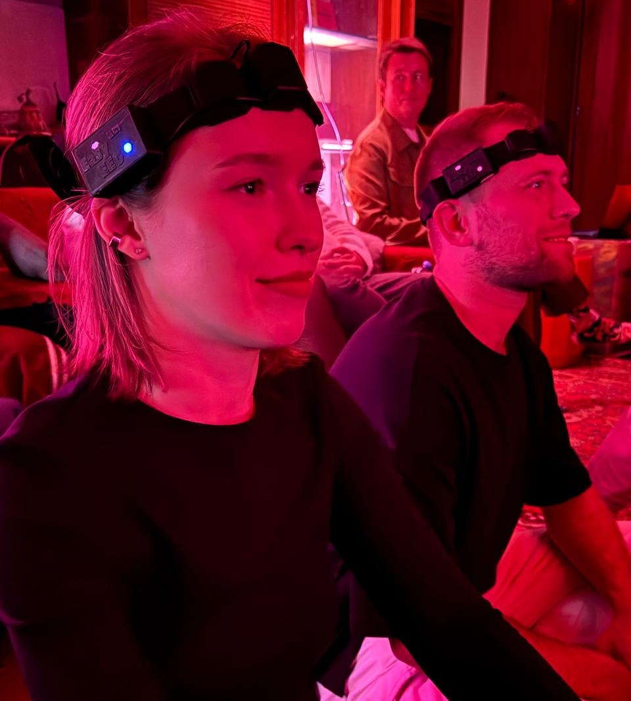
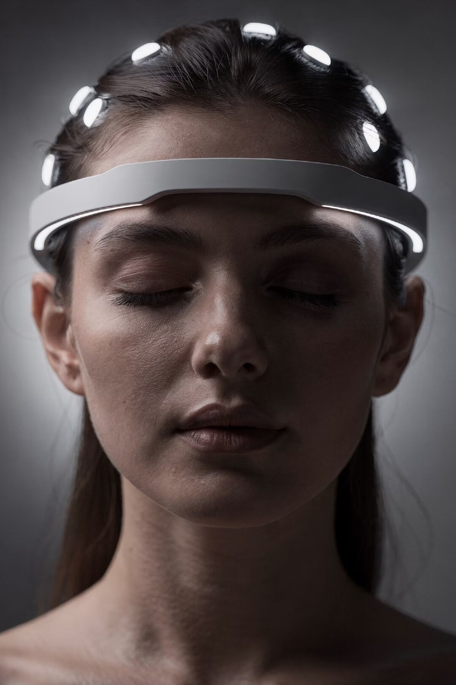
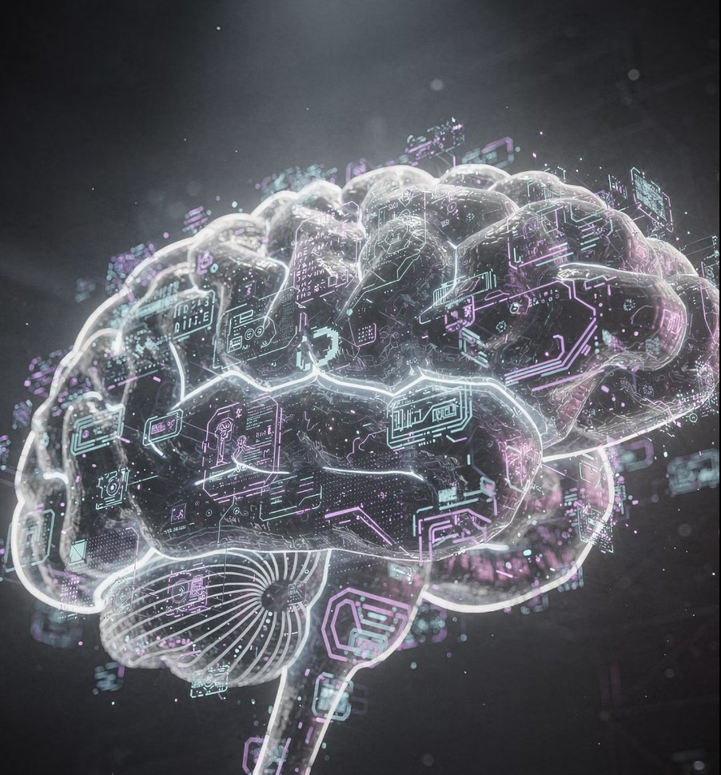

Субъективность
Самоотчёт важен, но зависит от языка, памяти и интерпретации человека
Психофитнес и внутренняя навигация через наблюдение динамики состояния.
Как это работает
Зачем это нужно
Обычно внутреннее состояние либо описывают словами, либо исследуют в лаборатории. Динамическая нейродетекция создаёт промежуточный формат: персональный сигнал, контекст запроса и быстрая обратная связь во время практики.
Самоотчёт важен, но зависит от языка, памяти и интерпретации человека
Сложная диагностика требует оборудования, специалистов и подготовленной среды
Изменение состояния трудно увидеть прямо в моменте практики

Метод
Нейроментальный сёрфинг. Управляемое исследование состояния. Нейродетектор фиксирует динамику ритмов мозга, а диалог и обратная связь помогают связать её с конкретным запросом.
Технология показывает динамику внутренней работы и помогает определить следующий шаг
Единый контур
От снятия сигнала до интеграции результата. Всё строится вокруг персональной динамики пользователя.
Портативное устройство для снятия данных
Обработка и визуализация нейроритмов
Адаптивная обратная связь во время сессии.
Сопоставление с накопленными паттернами
Интеграция с внешними системами
Протокол сессии
Запрос, настройка и исходное состояние
Видео- и аудиостимулы, фиксация реакции
Диалог и адаптация обратной связи
Фиксация нового понимания
Практический следующий шаг

Контекст важнее цифры
Показатели становятся полезными только в связке с личным запросом, ощущениями и диалогом. Поэтому сессия строится как внимательное исследование, направленное на понимание динамики и поиск следующего шага.
Сигнал помогает заметить динамику. Решение остаётся за человеком.Рабочая зона
Метод рассматривается как инструмент для исследовательских, образовательных и развивающих задач.
Этические границы
Динамическая нейродетекция не заменяет диагностику, лечение, кризисную или экстренную помощь. Медицинские решения требуют отдельного клинического контура.